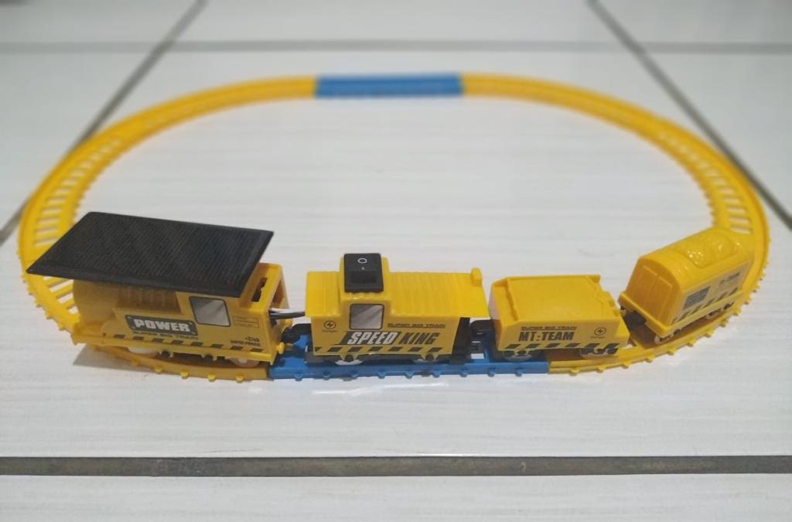

OBJETIVOS
No início de 2018 começamos as nossas pesquisas a fim informar e analisar o contexto ferroviário brasileiro e mundial. Dessa forma, pudemos investigar soluções para os problemas do transporte nacional.
De forma geral, mostrar a importância econômica e social da utilização dos trens e a utilização de energia solar como método de funcionamento para os trens, são os nossos focos.
Além de verificar os grandes gargalos do transporte rodoviário, almejamos solucionar os problemas da logística do transporte ferroviário brasileiro.
O QUE JÁ ALCANÇAMOS?
Levamos a pesquisa adiante como forma de um trabalho acadêmico, transmitindo o conhecimento obtido à colegas do IFC Blumenau, e à alguns professores. Além disso,levamos adiante à comunidade local
do IFSC Gaspar, transmitindo nossos estudos durante um dia. Foi realizada também uma gincana com propósito de contextualizar o tema para colegas de classe.
O PRÓXIMO PASSO
Com a criação do website, a intenção é propagar nossa mensagem para além da comunidade local, deixando o conteúdo disponível online para a informação dos interessados. Outra intenção é discutir possibilidades de transformar a energia solar como combustível. Para isso, estaremos contando da ajuda de professores da àrea de eletromecânica.
Como uma representação desse cenário, está em preparação uma maquete utilizando um trem movido à energia solar. Essa parte funcional já está em funcionamento, agora há só a finalização e acabamento do esquema.
